Options menu actions for Common
Below is an overview of all actions that can be accessed from this menu.
| UI Action Name | Action Name | Description |
|---|---|---|
| General… | Options | Open the General IDA Options dialog, where settings are organized thematically across multiple tabs. More… |
| Colors… | SetColors | Setup colors. More… |
| Font… | SetFont | Setup font. More… |
| Feature Flags… | ShowFeatureFlags | Configure feature flags. More… |
| Shortcuts… | ShortcutEditor | Edit shortcuts. More… |
| Show command palette… | CommandPalette | Show command palette. This command opens a dialog, that provides quick access to all available IDA actions with shortcuts and descriptions. More… |
| Repeat last palette command | RepeatLastPaletteCommand | Repeat last palette command |
| Disable undo | UndoToggle | Disable undo |
| Reset undo history | ResetUndoHistory | Reset undo history. More… |
| Assembler directives… | SetDirectives | Setup assembler directive generation. More… |
| Name representation… | SetNameType | Setup name representation. More… |
| Demangled names… | SetDemangledNames | Setup C++ demangled name representation. More… |
| Compiler… | SetupCompiler | Setup target compiler and its parameters. More… |
| String literals… | SetStrlitStyle | Setup string literal style. More… |
| Setup data types… | SetupData | Setup data types. More… |
| Source paths… | SetupSrcPaths | Setup source paths. More… |
General…
Open the General IDA Options dialog, where settings are organized thematically across multiple tabs.
- Disassembly
- Analysis
- Cross references
- String options…
- Browser options…
- Graph options
- Lumina options
- Misc
Disassembly options
This tab configures the appearance of the disassembly.
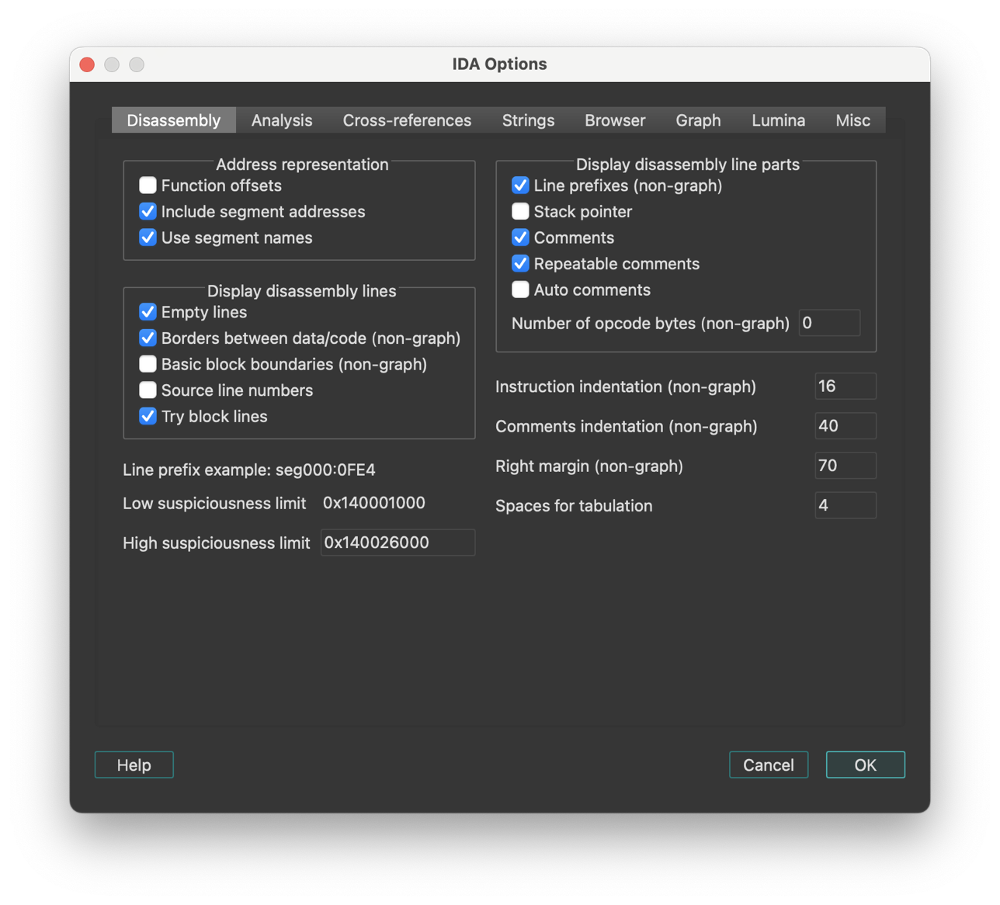
The checkboxes/input fields are organized into several categories:
Display disassembly line parts
Line prefixes (non-graph)
This checkbox enables or disables line prefixes display. Line prefix is the address of the current byte:
3000:1000 mov ax, bx
^^^^^^^^^
IDA.CFG parameter: SHOW_LINEPREFIXES
Stack pointer
If this option is set, IDA will display the value of the stack pointer in the line prefix.
IDA.CFG parameter: SHOW_SP
Number of opcode bytes (non-graph)
The opcode is the operation code of the current instruction. For the data items, the opcodes are elements of data directives. Sometimes there is not enough place to display all bytes of an item (of a large array, for example). In this case, IDA will display just the few first bytes of the item. For the code items, IDA will try to display all bytes of the instruction, even if it requires adding more lines just for the opcode bytes. If this behavior is not desired, the number of opcode bytes can be specified as a negative value. A negative value -N means to display N opcode bytes on a line but never display empty lines just for the opcode bytes. By default, IDA does not display the opcodes.
Opcode bytes are shown below:
3000:1000 55 push bp
^^^^^^^^^
IDA.CFG parameter: OPCODE_BYTES
Comments-related options:
| Option | IDA.CFG Parameter |
|---|---|
| Comments | n/a |
| Repeatable comments | SHOW_REPEATABLE_COMMENTS |
| Auto comments | SHOW_AUTOCOMMENTS |
{% hint style=“info” %} Auto comments are predefined comments for all instructions. If you forgot the meaning of a certain instruction, you can use this command to get comments for all lines on the screen. IDA does not give comments to very simple instructions, such as the ‘mov’ instruction, and does not override existing comments. {% endhint %}
Address representation
| Option | Description | Enabled | Disabled | IDA.CFG Parameter |
|---|---|---|---|---|
| Function offsets | This option controls the appearance of the line prefixes. If it is enabled, the addresses will be displayed as offsets from a function beginning. | somefunc+0x44 | cseg:0x4544 | SHOW_SEGMENTS |
| Include segment addresses | Marking this checkbox, you can enable segment addresses in the disassembly. IDA will show only offsets. | codeseg:0034 | 0034 | SHOW_SEGMENTS |
| Use segment names | This option controls the appearance of the segment names in the addresses. (codeseg has base 3000) | codeseg:0034 | 3000:0034 | USE_SEGMENT_NAMES |
Display disassembly lines
Empty lines
This option enables or disables the presence of the autogenerated empty lines in the disassembly. It could be useful to decrease the number of the blank lines on the screen increasing amount of information on it.
IDA.CFG parameter: SHOW_EMPTYLINES
Borders between data/code (non-graph)
This command enables or disables the presence of the autogenerated border lines in the disassembly. It could be useful to decrease the number of the blank lines on the screen increasing amount of information on it. A border line looks like this:
;---------------------------------------------------------
Note that you can hide a particular border by using the Toggle border command (action ToggleBorder).
IDA.CFG parameter: SHOW_BORDERS
Basic block boundaries (non-graph)
This option enables or disables the presence of the autogenerated empty lines at the end of basic blocks in the disassembly.
IDA.CFG(../../configuration/configuration-files.md) parameter: SHOW_BASIC_BLOCKS
Source line numbers
This options controls the presence of the source line number information in the disassembly. Some object files have this information.
IDA.CFG parameter: SHOW_SOURCE_LINNUM
Try block lines
This option controls the display of the try block information in the disassembly.
IDA.CFG parameter: SHOW_TRYBLOCKS
Other text formatting options
Instruction identation (non-graph)
You can change indention of disassembled instructions:
mov ax, bx
<-------------->
indention
IDA.CFG parameter: INDENTION
Comments identation (non-graph)
You can change indention of comments:
mov ax, bx ; this is a comment
<-------------------------------------->
indention
IDA.CFG parameter: COMMENTS_INDENTION
Right margin (non-graph)
This option controls the length of disassembly lines for data directives.
IDA.CFG parameter: MAX_DATALINE_LENGTH
Low and high suspiciousness limit
If IDA suspects that an operand can be represented as something different from a plain number, it will mark the operand as “suspicious” and display it in red/orange.
Two values control the definition of suspiciousness. An operand is ‘suspicious’ if it has an immediate value between low and high ‘suspicious’ limits. The comparison is always unsigned, i.e., in the instruction:
mov ax,[bp-2]
the immediate operand is 0xFFFE, not -2.
IDA uses a simple heuristic to determine initial suspiciousness limits. You may change these limits any time you want.
Analysis options
This tab allows you to configure analysis settings and processor-specific options.
- Target processor: Change the processor type (if multiple types are supported by the current processor module)
- Target assembler: Select the assembler style
Additional options (buttons):
- Kernel options
- Processor specific analysis options: Configure processor-specific settings (available when the current processor supports additional options)
- Memory mapping: Define memory mapping ranges (available when the current processor supports memory mapping)
- Reanalyze program
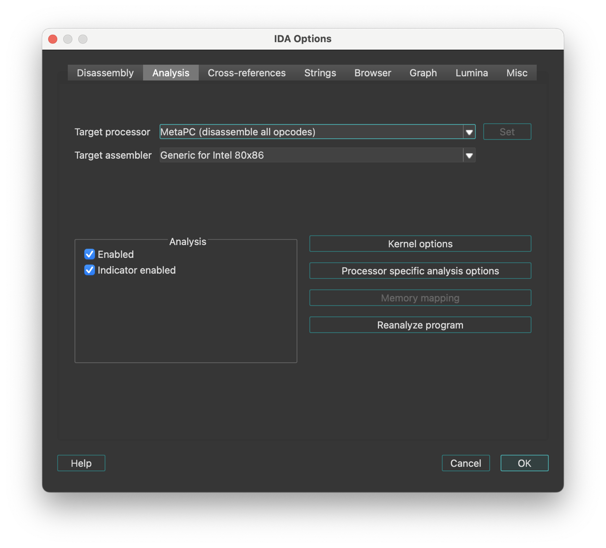
Analysis section
The checkboxes:
- Enabled
- Indicator enabled
allows you to disable and enable the autoanalysis and its indicator.
By default, the auto analysis and indicator are enabled. Disable them only if you are sure it will help.
Action name: SetAuto
The analysis indicator is located in the bottom left corner of the main IDA window (upper right corner in text version). Possible values of the indicator:
| Indicator | Description |
|---|---|
| (empty) | Indicator is turned off |
AU: idle | Autoanalysis is finished |
AU:disabled | Autoanalysis is disabled |
FL:<address> | Execution flow is being traced |
PR:<address> | A function is being created |
TL:<address> | A function tail is being created |
SP:<address> | The stack pointer is being traced |
AC:<address> | The address is being analyzed |
LL:<number> | A signature file is being loaded |
L1:<address> | The first pass of FLIRT |
L2:<address> | The second pass of FLIRT |
L3:<address> | The third pass of FLIRT |
TP:<address> | Type information is being applied |
FI:<address> | The final pass of autoanalysis |
WF:<address> | Weak execution flow is being traced |
??:<address> | The address becomes unexplored |
@:<number> | Indication of various activity |
{% hint style=“success” %} Hint: you can right-click the analysis indicator to quickly disable or enable it, or to reanalyze the program. {% endhint %}
See also auto analysis explanation.
Processor Type
| Type | Description | Family |
|---|---|---|
8086 | Intel 8086 | IBM PC family |
80286r | Intel 80286 real mode | IBM PC family |
80286p | Intel 80286 protected mode | IBM PC family |
80386r | Intel 80386 real mode | IBM PC family |
80386p | Intel 80386 protected mode | IBM PC family |
80486r | Intel 80486 real mode | IBM PC family |
80486p | Intel 80486 protected mode | IBM PC family |
80586r | Intel Pentium & MMX real mode | IBM PC family |
80586p | Intel Pentium & MMX prot mode | IBM PC family |
80686p | Intel Pentium Pro & MMX | IBM PC family |
k62 | AMD K6-2 with 3DNow! | IBM PC family |
p2 | Intel Pentium II | IBM PC family |
p3 | Intel Pentium III | IBM PC family |
athlon | AMD K7 | IBM PC family |
p4 | Intel Pentium 4 | IBM PC family |
metapc | Disassemble all IBMPC opcodes | IBM PC family |
8085 | Intel 8085 | Zilog 80 family |
z80 | Zilog 80 | Zilog 80 family |
z180 | Zilog 180 | Zilog 80 family |
z380 | Zilog 380 | Zilog 80 family |
64180 | Hitachi HD64180 | Zilog 80 family |
gb | Gameboy | Zilog 80 family |
z8 | Zilog 8 | Zilog 8 family |
860xr | Intel 860 XR | Intel 860 family |
860xp | Intel 860 XP | Intel 860 family |
8051 | Intel 8051 | Intel 51 family |
80196 | Intel 80196 | Intel 80196 family |
80196NP | Intel 80196NP, NU | Intel 80196 family |
m6502 | MOS 6502 | MOS Technology 65xx family |
m65c02 | MOS 65c02 | MOS Technology 65xx family |
pdp11 | DEC PDP/11 | PDP family |
68000 | Motorola MC68000 | Motorola 680x0 family |
68010 | Motorola MC68010 | Motorola 680x0 family |
68020 | Motorola MC68020 | Motorola 680x0 family |
68030 | Motorola MC68030 | Motorola 680x0 family |
68040 | Motorola MC68040 | Motorola 680x0 family |
68330 | Motorola CPU32 (68330) | Motorola 680x0 family |
68882 | Motorola MC68020 with MC68882 | Motorola 680x0 family |
68851 | Motorola MC68020 with MC68851 | Motorola 680x0 family |
68020EX | Motorola MC68020 with both | Motorola 680x0 family |
colfire | Motorola ColdFire | Motorola 680x0 family |
68K | Motorola MC680x0 all opcodes | Motorola 680x0 family |
6800 | Motorola MC68HC00 | Motorola 8bit family |
6801 | Motorola MC68HC01 | Motorola 8bit family |
6803 | Motorola MC68HC03 | Motorola 8bit family |
6301 | Hitachi HD 6301 | Motorola 8bit family |
6303 | Hitachi HD 6303 | Motorola 8bit family |
6805 | Motorola MC68HC05 | Motorola 8bit family |
6808 | Motorola MC68HC08 | Motorola 8bit family |
6809 | Motorola MC68HC09 | Motorola 8bit family |
6811 | Motorola MC68HC11 | Motorola 8bit family |
6812 | Motorola MC68HC12 | |
hcs12 | Motorola MC68HCS12 | |
6816 | Motorola MC68HC16 | |
java | java | Java family |
ppc | PowerPC big endian | PowerPC family |
ppcl | PowerPC little endian | PowerPC family |
arm | ARM little endian | ARM family |
armb | ARM big endian | ARM family |
tms320c2 | TMS320C2x series | TMS 16bit addressing family |
tms320c5 | TMS320C5x series | TMS 16bit addressing family |
tms320c6 | TMS320C6x series | TMS VLIW family |
tms320c3 | TMS320C3x series | TMS VLIW family |
tms32054 | TMS320C54xx series | |
tms32055 | TMS320C55xx series | |
sh3 | Renesas SH-3 (little endian) | Renesas SuperH series |
sh3b | Renesas SH-3 (big endian) | Renesas SuperH series |
sh4 | Renesas SH-4 (little endian) | Renesas SuperH series |
sh4b | Renesas SH-4 (big endian) | Renesas SuperH series |
sh2a | Renesas SH-2A (big endian) | Renesas SuperH series |
avr | ATMEL AVR | ATMEL family |
mipsl | MIPS little endian | MIPS family: R2000, R3000, R4000, R4200, R4300, R4400, R4600, R8000, R10000 |
mipsb | MIPS big endian | MIPS family: R2000, R3000, R4000, R4200, R4300, R4400, R4600, R8000, R10000 |
mipsrl | MIPS & RSP little | MIPS family: R2000, R3000, R4000, R4200, R4300, R4400, R4600, R8000, R10000 |
mipsr | MIPS & RSP big | MIPS family: R2000, R3000, R4000, R4200, R4300, R4400, R4600, R8000, R10000 |
r5900l | MIPS R5900 little | MIPS family: R2000, R3000, R4000, R4200, R4300, R4400, R4600, R8000, R10000 |
r5900r | MIPS R5900 big | MIPS family: R2000, R3000, R4000, R4200, R4300, R4400, R4600, R8000, R10000 |
h8300 | H8/300x in normal mode | Hitachi H8 family |
h8300a | H8/300x in advanced mode | Hitachi H8 family |
h8s300 | H8S in normal mode | Hitachi H8 family |
h8s300a | H8S in advanced mode | Hitachi H8 family |
h8500 | H8/500 | Hitachi H8/500 family |
pic12cxx | Microchip PIC 12-bit (12xxx) | PIC family |
pic16cxx | Microchip PIC 14-bit (16xxx) | PIC family |
pic18cxx | Microchip PIC 16-bit (18xxx) | PIC family |
sparcb | SPARC big endian | SPARC family |
sparcl | SPARC little endian | SPARC family |
alphab | DEC Alpha big endian | ALPHA family |
alphal | DEC Alpha little endian | ALPHA family |
hppa | HP PA-RISC big endian | HP PA-RISC family |
dsp56k | Motorola DSP 5600x | DSP 56K family |
dsp561xx | Motorola DSP 561xx | DSP 56K family |
dsp563xx | Motorola DSP 563xx | DSP 56K family |
dsp566xx | Motorola DSP 566xx | DSP 56K family |
c166 | Siemens C166 | C166 family |
c166v1 | Siemens C166 v1 family | C166 family |
c166v2 | Siemens C166 v2 family | C166 family |
st10 | SGS-Thomson ST10 | C166 family |
super10 | Super10 | C166 family |
st20 | SGS-Thomson ST20/C1 | ST20 family |
st20c4 | SGS-Thomson ST20/C2-C4 | |
st7 | SGS-Thomson ST7 | ST7 family |
ia64l | Intel Itanium little endian | IA64 family |
ia64b | Intel Itanium big endian | IA64 family |
cli | Microsoft.Net platform | |
net | Microsoft.Net platform (alias) | |
i960l | Intel 960 little endian | i960 family |
i960b | Intel 960 big endian | i960 family |
f2mc16l | Fujitsu F2MC-16L | Fujitsu F2MC family |
f2mc16lx | Fujitsu F2MC-16LX | Fujitsu F2MC family |
78k0 | NEC 78k/0 | |
78k0s | NEC 78k/0s | |
m740 | Mitsubishi 8-bit | |
m7700 | Mitsubishi 16-bit | Mitsubishi 16-bit family |
m7750 | Mitsubishi 16-bit | Mitsubishi 16-bit family |
m32r | Mitsubishi 32-bit | Mitsubishi 32-bit family |
m32rx | Mitsubishi 32-bit extended | Mitsubishi 32-bit family |
st9 | STMicroelectronics ST9+ | |
fr | Fujitsu FR family | |
m7900 | Mitsubishi M7900 | |
kr1878 | Angstrem KR1878 | |
ad218x | Analog Devices ADSP | |
oakdsp | Atmel OAK DSP | |
tricore | Infineon Tricore | |
ebc | EFI Bytecode | |
msp430 | Texas Instruments MSP430 |
Processor modules can accept additional options that can be passed on the commandline with the -p switch. Currently only the ARM module supports it. For example, -parm:ARMv7-A will turn on options specific for the ARMv7-A architecture, such as NEON instruction set.
For information about additional processor modules, please check supported processors
Please note that when you change the processor type, IDA may change the target assembler, so check it out.
You may get a message saying that IDA does not know the specified processor if IDA fails to load the corresponding processor module:
- Windows IDA uses .dll file extension
- Linux IDA uses .so file extension
- Mac IDA uses .dylib file extension
{% hint style=“info” %} Modules compiled with support for 64-bit address space, will feature a ‘64’ suffix before the extension. E.g., ‘pc64.dll’ {% endhint %}
{% hint style=“info” %} Changing the processor type leads to reanalysis of the whole program. Sometimes this is useful. {% endhint %}
{% hint style=“info” %} When you load a new processor module, all analysis options are reset to the values specified in the configuration file. {% endhint %}
IDA determines the default processor using the input file extension and the contents of the input file. The table which describes the input file extensions and the corresponding processor types is located in IDA.CFG file and looks like this:
DEFAULT_PROCESSOR = {
/* Extension Processor */
"com" : "8086" // IDA will try the specified
"exe" : "80386r" // extensions if no extension is
"dll" : "80386r" // given.
"drv" : "80386r"
"o" : "68000"
"prc" : "68000" // PalmPilot programs
"axf" : "arm"
"h68" : "68000" // MC68000 for *.H68 files
"i51" : "8051" // i8051 for *.I51 files
"sav" : "pdp11" // PDP-11 for *.SAV files
"rom" : "z80" // Z80 for *.ROM files
"cla" : "java" // Java classes
"class": "java" // Java classes
"s19": "6811"
"*": "80386p" // Default processor
}
If you want to change the default processor type, you need to change this table. You may add/delete rows in this table.
See also: ARM processor specifics.
ARM processor specifics
Since architecture version v4 (introduced in ARM7 cores), ARM processors have a new 16-bit instruction set called Thumb (the original 32-bit set is referred to as “ARM”). Since these two sets have different instruction encodings and can be mixed in one segment, we need a way to specify how to disassemble instructions. For this purpose, IDA uses a virtual segment register named ‘T’. If its value is 0, then ARM mode is used. Otherwise, Thumb mode is used. ARM is the default mode. Please note that if you change the value of T register for a range, IDA will destroy all instructions in that range because their disassembly is no longer correct.
IDA use UAL (Unified Assembly Language) syntax by default which uses the same syntax for both ARM and Thumb mode. If necessary, legacy assembler syntax can be selected in Analysis options.
To decode Aarch64 (ARM64) instructions the segment with instructions must be set to 64-bit (see Edit segment… command; action EditSegment).
Processor options for ARM
- Simplify instructions: If this option is on, IDA will simplify instructions and replace them by clearer pseudo-instructions. For example:
MOV PC, LR
is replaced by
RET
- Disable pointer dereferencing: If this option is on, IDA will not use =label syntax for loads from literal pools. For example,
LDR R1, =dst
...
off_0_1003C DCD dst
will be shown as
LDR R1, off_0_1003C
-
No automatic ARM-Thumb switch: If this option is on, IDA will not propagate ARM-Thumb modes automatically when following jumps and calls.
-
Disable BL jumps detection: Some ARM compilers in Thumb mode use BL (branch-and-link) instead of B (branch) for long jumps, since BL has more range. By default, IDA tries to determine if BL is a jump or a call. You can override IDA’s decision using commands in Edit → Other menu (Force BL call/Force BL jump). If your target does not use this trick, you can set this option and IDA will always treat BL as a call.
-
Scattered MOVT/MOVW pairs analysis: A pair of MOVT and MOVW instructions can be used to load any 32-bit constant into a register without having to use the literal pool. For example: MOVW R1, #0xABA2 MOVT R1, #0x32AA is simplified by IDA into MOV R1, 0x32AAABA2 (unless macro creation is turned off). However, if there is an unrelated instruction between them, such simplification is not possible. If you enable the conversion, then IDA will try to convert operands of even scattered instructions. The example above could be represented as:
MOVW R1, #:lower16:0x32AAABA2
[other instructions]
MOVT R1, #:upper16:0x32AAABA2
It is possible to select how aggressively IDA should try to handle such pairs:
-
leave them as is, convert only if the result a valid address, or try to
-
convert all pairs even if the result does not look like a valid address.
-
Edit ARM architecture options: This button allows you to edit various features of the ARM architecture. This will affect the disassembly of some instructions depending on whether the selected architecture supports them. For details, see the ARM Architecture Reference Manual.
Command-line options
You can configure the architecture options from the command line. For that, use the -parm:<option1[;option2...]> switch.
The following options are accepted:
ARMv<N>- base ARM architecture version (e.g. ARMv4, ARMv4T, ARMv5TE, …, ARMv7-M, ARMv7-A), or<name>- ARM core name (e.g. ARM7TDMI, ARM926EJ-S, PXA270, Cortex-M3, Cortex-A8)
Additionally, a special name “armmeta” can be used to enable decoding of all known instructions.
The options above will set some default values that can be adjusted further:
| Option | Description |
|---|---|
NoVFP/VFPv<N> | disable or enable support for VFP instructions (e.g. VFPv3). |
NoNEON/NEON/NEON-FMA | disable or enable support for NEON (aka Advanced SIMD) instructions. |
NoThumb/Thumb/Thumb-2 | disable or enable support for Thumb (16-bit) or Thumb-2 (16/32-bit) instructions. |
NoARM/ARM | disable or enable support for ARM instructions. |
XScale | support for XScale-specific instructions. Implies ARMv5TE. |
NoWMMX/WMMXv1/WMMXv2 | support for Intel Wireless MMX extensions (v1 or v2). Implies XScale. |
See also
- Change segment register value command (action
SetSegmentRegister) - Set default segment register value… command (action
SetSegmentRegisterDefault) to specify the segment register value.
Specify Target Assembler
This command allows you to change the target assembler, i.e. the assembler for which the output is generated. You select the target assembler from a menu. The menu items depend on the current processor type.
{% hint style=“info” %} Currently, IDA supports only a generic assembler for 80x86 processors. We recommend the use of Borland’s TASM to compile the output assembler files. {% endhint %}
Kernel options
Here you can change various kernel analysis options:
Kernel analysis options 1
- Trace execution flow:
This option allows IDA to trace execution flow and convert all references bytes to instructions (the Code command; action
MakeCode) Mark typical code sequences as code. IDA knows some typical code sequences for each processor. For example, it knows about typical sequence
push bp
mov bp, sp
If this option is enabled, IDA will search for all typical sequences and convert them to instructions even if there are no references to them. The search is performed at the loading time.
-
Locate and create jump tables: This option allows IDA to try to guess the address and size of jump tables. Please note that disabling this option will not disable the recognition of C-style typical switch constructs.
-
Control flow to data segment is ignored: If set, IDA will not analyze code reference targets in pure data segments. Usually pure data segments have some instructions (e.g., thunk functions), that’s why this option is set off by default. For Mach-O files, it is set on because pure data segment do not contain instructions in them.
-
Analyze and create all xrefs: If this option is disabled, IDA will not thoroughly analyze the program: it will simply trace execution flow, nothing more (no xrefs, no additional checks, etc.)
-
Delete instructions with no xrefs: This option allows IDA to undefine instructions without any xrefs to them. For example, if you undefine (Edit → Undefine) an instruction at the start of a function, IDA will trace execution flow and delete all instructions that lose references to them.
-
Create function if data xref data->code32 exists: If IDA encounters a data reference from DATA segment to 32bit CODE segment, it will check for the presence of meaningful (disassemblable) instruction at the target. If there is an instruction, it will mark it as an instruction and will create a function there.
-
Create functions if call is present This option allows IDA to create function (Edit → Create function…) (proc) if a call instruction is present. For example, the presence of:
call loc_1234
leads to creation of a function at label loc_1234
-
Create function tails: This option allows IDA to find and append separately located function tails to function definitions.
-
Create stack variables: This option allows IDA to automatically create stack variables and function parameters.
-
Propagate stack argument information:
This option propagates the stack argument information (the type and the name) to the caller’s stack. If the caller is called, then the information will be propagated further through the whole program. Currently, the type propagation is really simple and non-intelligent: the first encountered type for a stack variable will be used.
-
Propagate register argument information: This option propagates the register argument information (the type and the name) to the caller. If the caller is also called, then the information will be propagated further through the whole program.
-
Trace stack pointer: This option allows IDA to trace (Edit → Functions → Change stack pointer…) the value of the SP register.
-
Perform full stack pointer analysis: This option allows IDA to perform the stack pointer analysis using the simplex method. This option is valid only for the IBM PC processor.
-
Perform ‘no-return’ analysis: This option allows IDA to perform the control flow analysis and determine functions which do not return to their callers. The ‘exit()’ function, for example, does not return to its caller.
-
Try to guess member function types: If set, IDA will guess member function types using the demangled names. Please note that this rule may occasionally produce wrong results, for example, for static member functions. IDA has no means of distinguishing them from non-static member functions. If clear, IDA will guess only types of non-member functions.
See also:
Kernel analysis options 2
-
Truncate functions upon code deletion: Truncate functions when the code at the function end gets deleted. If this option is turned off, IDA does not modify function definitions when code is deleted.
-
Create string literals if data xref exists: If IDA encounters a data reference to an undefined item, it checks for the presence of the string literal at the target. If the length of the candidate string literal is big enough (more than 4 chars in 16bit or data segments; more than 16 chars otherwise), IDA will automatically create a string literal(Edit → Strings → String).
-
Check for unicode strings: This option allows IDA to check for the presence of the unicode strings in the program and creates them if necessary. IDA will check for the unicode strings only if the string style is set to “C-style (0 terminated)” or “Unicode”.
-
Create offsets and segments using fixup info: IDA will use relocation information to make the disassembly nicer. More precisely, it will convert all data items with relocation information to words or dwords like this:
dd offset label
dw seg seg000
If an instruction has a relocation information attached to it, IDA will convert its immediate operand to an offset or segment:
mov eax, offset label
You can display the relocation information attached to the current item by using the Print internal flags command.
-
Create offset if data xref to seg32 exists: If IDA encounters a data reference to 32bit segment and the target contains 32bit value which can be represented as an offset expression, IDA will convert it to an offset.
-
Convert 32bit instruction operand to offset: This option works only in 32bit and 64bit segments. If an instruction has an immediate operand and the operand can be represented as a meaningful offset expression, IDA will convert it to an offset. However, the value of immediate operand must be higher than 0x10000.
-
Automatically convert data to offsets:
This option allows IDA to convert all newly created data items to offsets if the following conditions are satisfied:
-
the offset target is a valid address in the program
-
the target address is higher than 0x20
-
the target does not point into the middle of an item
-
if the target is code, the execution does not flow to it from the previous instruction
-
the data is dword (4 bytes) in a 32-bit segment or qword(8 bytes) in a 64-bit segment
-
the segment type is not special (extern, communal, abs…)
-
Use flirt signatures: Allows usage of FLIRT technology
-
Comment anonymous library functions: This option appends a comment to anonymous library functions. The comment consists of the description of the FLIRT signature which has recognized the function and marked it as coming from a library.
-
Multiple copy library function recognition: This option allows FLIRT to recognize several copies of the same function in the program.
-
Automatically hide libary functions: This option hides the functions recognized by FLIRT. It will have effect only from the time it is set.
-
Rename jump functions as j_…: This option allows IDA to rename simple functions containing only
jmp somewhere
instruction to “j_somewhere”.
-
Rename empty functions as nullsub_…: This option allows IDA to rename empty functions containing only a “return” instruction as “nullsub_…” (… is replaced by a serial number: 0,1,2,3…)
-
Coagulate data at the final pass: This option is meaningful only if “Make final analysis pass” is enabled. It allows IDA to convert unexplored bytes (Edit → Undefine) to data arrays in the non-code segments.
-
Coagulate code at the final pass: This option is meaningful only if “Make final analysis pass” is enabled. It allows IDA to convert unexplored bytes to data arrays in the code segments. Make final analysis pass This option allows IDA to coagulate all unexplored bytes by converting them to data or instructions. See also analysis options 1 analysis options 3
Kernel analysis options 3
-
Enable EH analysis: If this option is set on, IDA uses EH information of the binary for more detailed analysis.
-
Enable RTTI analysis: If this option is set on, IDA tries to detect C++ Run-Time Type Identification and does additional analysis based on this information.
-
Enable macros: This option is disabled if the processor module does not support macros. If this option is on, IDA will combine several instructions into one macro instruction. For example for the ARM processor:
ADRP Rx, label@PAGE
ADD Rx, Rx, label@PAGEOFF
will be replaced by
ADRL Rx, label
- Merge strlits: If the analysis option “Create string literals if data xref exists” is set and the target string literal ends at the existing one (without a termination character), IDA will merge these strlits into one.
Cross-References options
This tab configures how cross-references (xrefs) are displayed.
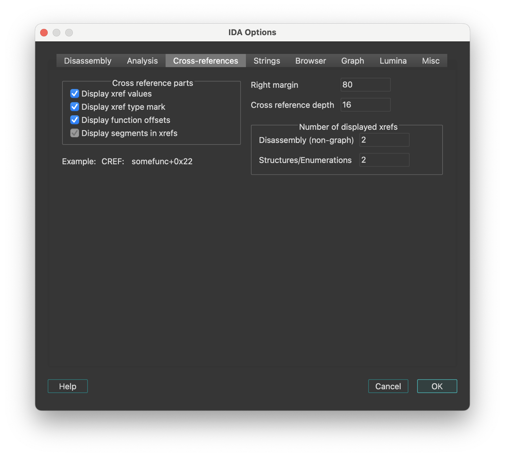
IDA maintains cross-references automatically. Of course, when IDA starts to disassemble a new file, the cross-references will not appear immediately; they will be collected during background analysis.
Cross-reference parts
- Display segments in xrefs: This checkbox enables or disables segments in cross references:
Enabled: ; CODE XREF: 3000:1025
Disabled: ; CODE XREF: 1025
- Display xref type mark: If this option is disabled, IDA will not display “CODE” or “DATA” in the cross-references.
IDA.CFG parameter: SHOW_XREF_TYPES
- Display function offsets: This option controls the appearance of the cross-reference addresses. If it is enabled, the addresses will be displayed as offsets from a function beginning.
Example:
Enabled: somefunc+0x44
Disabled: cseg:0x4544
IDA.CFG parameter: SHOW_XREF_FUNC
- Display xref values: If this option is disabled, IDA will just display the presence of cross-references, like this:
; CODE XREF: ...
IDA.CFG parameter: SHOW_XREF_VALUES
- Right margin: Determines the maximal length of a line with the cross references.
IDA.CFG parameter: MAX_XREF_LENGTH
- Cross reference depth: This value “how many bytes of an object to look at to collect cross references”. For example, we have an array:
A db 100 dup(0)
If some instruction refers to the 5-th element of the array:
mov al,A+5
with TD=3 we'll have no xrefs displayed
with TD=10 we'll have this xref
IDA.CFG parameter: MAX_TAIL
- Number of displayed xrefs:
Determines the maximal number of the cross references to display. You may keep this value low because you can access all xrefs by using the List cross references to/from… command.
IDA.CFG parameter: SHOW_XREFS
String options
This tab sets up the string literals options.
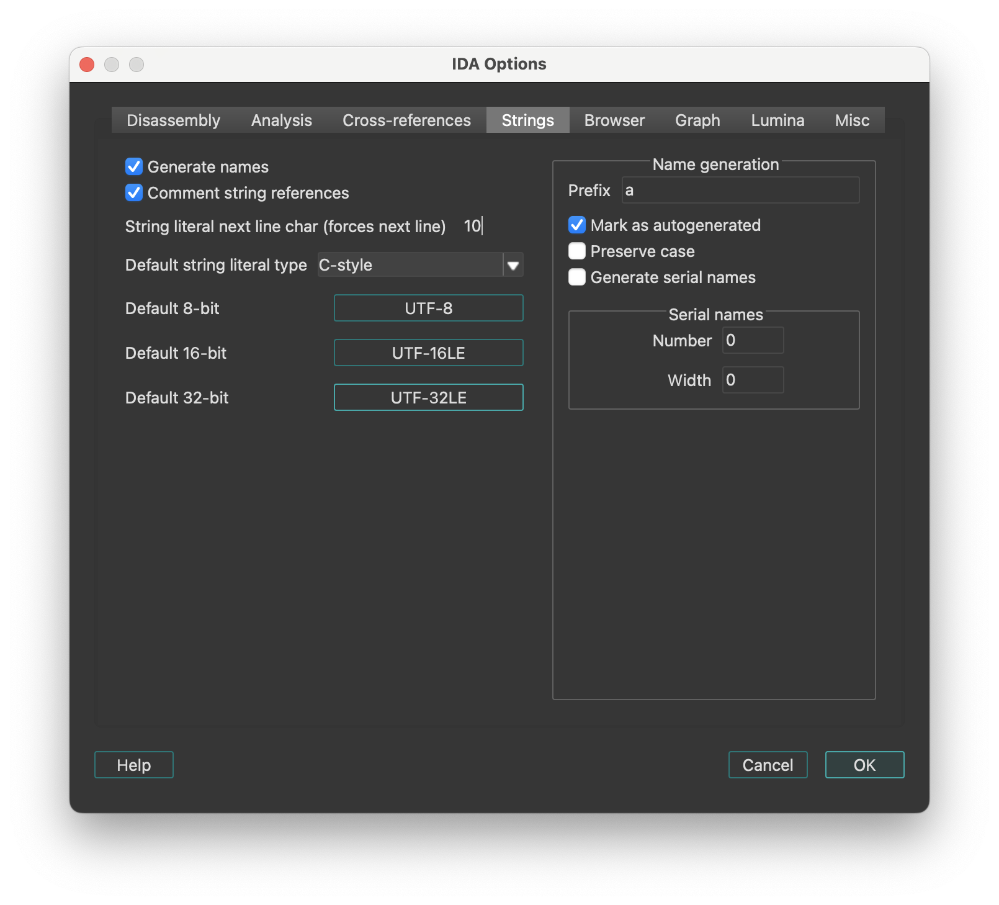
- Generate names If this option is set, IDA will give meaningful names to newly created string literals.
Name generation
-
Prefix: The prefix inserted in the field will be used to form the string name.
-
Mark as autogenerated: If a name is marked as autogenerated, it will be displayed in a different color and will be included in the list of names [action
JumpName] depending on the current setting. -
Generate serial names: IDA can generate serial names for string literals, i.e.
pref_001,pref_002,pref_003 etc...
To enable serial names generation, specify prefix for names, starting serial number, and number of leading zeroes.
Each time you create a string literal (Edit → Strings → String), IDA generates a new serial name and assigns it to the string.
-
String literal next line char: This symbol, when encountered in the string, will make IDA start a new line in the string representation in the disassembly. Usually it is the line feed character (‘\n’).
-
Comment string literal references: This option tells IDA to display the contents of the string literal next to the instruction or offset that refers to the string.
Browser options
This tab of IDA Options configures the disassembly browser’s display behavior, hints, highlighting and navigation features. There are two groups of settings:
- The first group is for hints that are displayed when the mouse is hovered over some text.
- The second group is for other navigation and display settings, like highlighting.
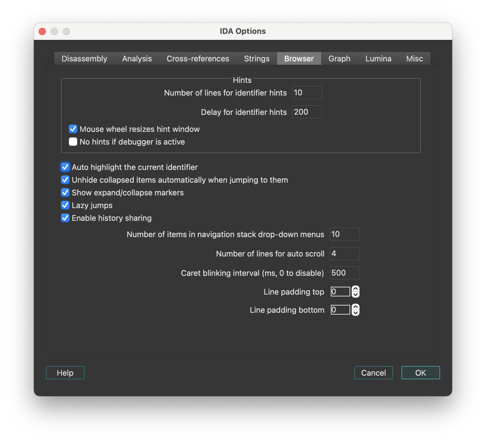
Hints
| Option | Description |
|---|---|
| Number of lines for identifier hints | Specifies how tall the hint window will be initially. IDA may decide to display less lines than specified if the hint is small. The user can resize the hint window using the mouse wheel. |
| Delay for identifier hints | Milliseconds that pass before the hint appears when the user hovers the mouse pointer over an identifier. |
| Mouse wheel resizes hint window | Permit to resize the hint window by using the mouse wheel. Can be turned off if the user does not want to resize the hints. |
| No hints if debugger is active | Hints will be disabled when the debugger is active. This may be useful to speed of debugging: calculating hints for zero filled ranges can be very expensive. |
Other settings
| Option | Description |
|---|---|
| Auto highlight the current identifier | Highlight the current identifier everywhere on the screen. IDA tries to determine if the current identifier denotes a register. In this case it will highlight references to other parts of the register. For example, if “AL” is highlighted, IDA will also highlight “AH”, “AX”, and “EAX” (if the current processor is x86). |
| Unhide collapsed items automatically when jumping to them | If this option is set on, IDA will automatically uncollapse hidden functions if the user decides to jump to them. As soon as the user quits the function by pressing Esc, the function is automatically collapsed again. |
| Lazy jumps | If this option is set on, IDA will not redraw the disassembly window if the jump target is already on the screen. In this case, it will just move the cursor to the specified address. This option leads to less screen redraws and less jumpy behavior. |
| Enable history sharing | This option is enabled by default. It keeps a shared global history across multiple widgets (including Disassembly, Pseudocode, Local Types, and Stack), allowing you to navigate back and forward between them. |
| Number of items in navigation stack drop-down menus | Specifies the number of entries in the drop-down menu for the ‘Jump’ toolbar. |
| Number of lines for auto scroll | Specifies how many lines force automatic scrolling of the disassembly view. |
| Caret blinking interval | Specifies how fast the input caret blinks (in milliseconds). Must be greater than or equal to 500, or zero. Zero means to disable blinking. |
Graph options
This tab configures the visual appearance and behavior of graph view and proximity view.
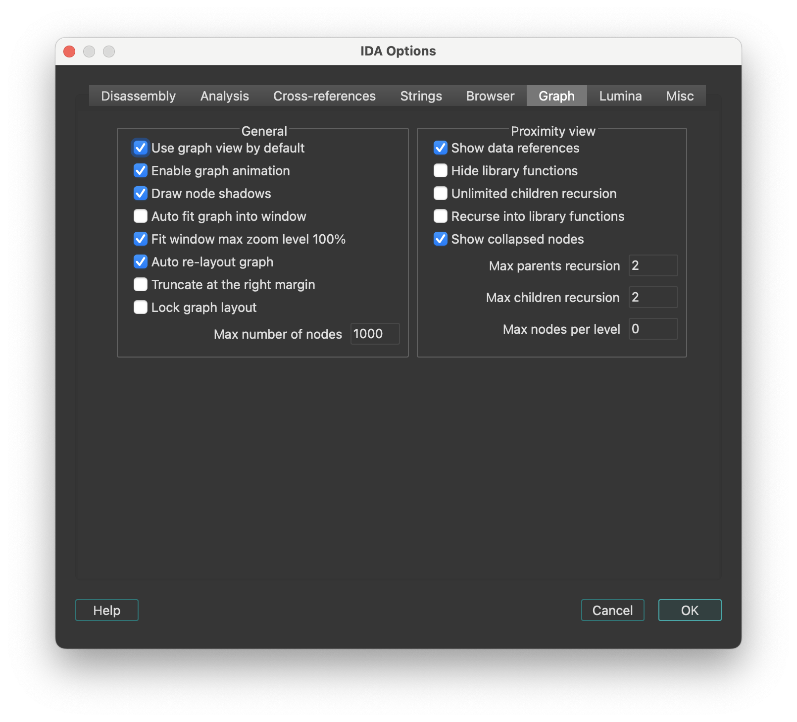
General
| Option | Description |
|---|---|
| Use graph view by default | IDA switches to graph mode for each ‘jump’ command. |
| Enable graph animation | Animate the graph layout, movement, and group collapsing/uncollapsing. While animation takes time, it gives the user some idea what’s going on. |
| Draw node shadows | Display shadows for each graph node. Shadows are not displayed for really huge or ridiculously small nodes. |
| Auto fit graph into window | Zoom the graph so that it occupies the whole window. |
| Fit window max zoom level 100% | The ‘fit window’ command maximal zoom level is 100%. |
| Re-layout graph if nodes overlap | IDA recomputes the graph layout if a node overlap is detected. The presence of a custom layout (if the user has displaced some graph nodes) effectively turns off this option. |
| Re-layout graph upon screen refresh | IDA recomputes the graph layout at each screen refresh. Turning this option off accelerates IDA but then a manual layout might be required after some operations. |
| Truncate at the right margin | All nodes at truncated at the right margin. The right margin is specified in the Options → General → Disassembly tab. This option narrows the graph but hides some information by truncating long lines. |
| Lock graph layout | Locks the graph layout by ignoring attempts to displace nodes. This prevents the creation of custom layouts that might lead to ugly graph layouts when nodes change their sizes. |
Proximity view
| Option | Description |
|---|---|
| Show data references | Show data cross-referenced items in proximity view. |
| Hide library functions | Do not show data or code cross-references to library functions, only show cross-referenced local functions. |
| Unlimited children recursion | Recurse until there are no more callees (children) of the currently selected central node and all of his children. |
| Recurse into library functions | Displays children data or code cross-references from library functions. |
| Max parents recursion | Maximum recursion level for displaying parents of the currently selected central node. The value 0 disables parents recursion. |
| Max children recursion | Maximum recursion level for displaying children of the currently selected central node. The value 0 means no maximum recursion level. |
| Max nodes per level | Maximum number of nodes to show per level of children and parents. |
Lumina options
This tab configures Lumina server connection settings.
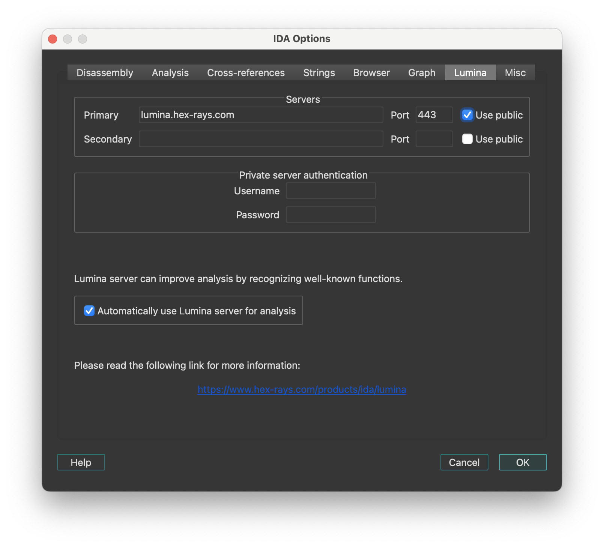
Servers
- Use public: Sets host and port to the default public server hosted by Hex-Rays. No username or password is required.
Private server authentication
Specify the username and password credentials for a Private Lumina server.
Automatically use Lumina server for analysis
Instructs IDA to fetch function metadata from the current Lumina server, after the initial auto-analysis is complete. This helps with the recognition of known functions stored in the database of the Lumina server.
Lumina command line options
Command line switch '-Olumina' overrides for ida session the primary server and '-Osecondary_lumina' the secondary one.
List of options
| Option | Description |
|---|---|
host | lumina server host |
port | lumina server port |
user | username for authentification on private lumina |
pass | password for authentification on private lumina |
proxy_host | proxy host |
proxy_port | proxy port |
proxy_user | username for authentification on proxy |
proxy_pass | password for authentification on proxy |
Example
-Osecondary_lumina:host=lumina.hex-rays.com:port=443
Use the public lumina as secondary server for this ida session
Miscellaneous options
This tab configures miscellaneous options including editor settings, encoding and types autocompletion.
-
Editor: A text editor is to be used when the user decides to edit an IDC script using the IDC toolbar.
-
Navigation band refresh interval (milliseconds): Specifies how often the navigation band will be refreshed. IDA tries to minimize the number of redrawings because they could be really time and processor consuming (imagine a huge program, 50-100 megabytes of code. It would take a long time to refresh information on the navigation band because the whole program will be examined to determine how to draw the band). If this option is set to
0, the navigation band is refreshed only when the cursor is moved far enough to reflect its movement on the band. -
Convert already defined bytes: Determines how IDA should behave when user operations would end up redefining some already-defined bytes.
-
Associate .IDB file extension with IDA: Whether or not the .IDB extension should be associated, at the OS-level, with IDA.
-
Enable autocomplete in forms: Determines whether input fields should provide an auto-complete combo box by default.
-
Output files encoding: The encoding used to generate output text files from IDA. The value ‘
’ means that the IDB’s default 8 bit-per-unit encoding will be used.
Types autocompletion
| Option | Description |
|---|---|
| Enable autocomplete for types | Enables or disables the entire autocomplete mechanism for types. If you uncheck the box, the behavior will not differ from previous versions. Enabled by default. |
| Case sensitive | Changes case sensitivity. When enabled, for example, the prefix b will show bucket but not BigStruct. Disabled by default. |
| Enable autocomplete for curly braces | Enables or disables autocompletion of curly braces and indents. When enabled, typing { inserts a closing brace on a new line, with an indented empty line and the cursor placed in between. Enabled by default. |
| Enable type hints | Enables or disables hints when selecting a type from the autocomplete suggestions. These hints behave similarly to the hints in Local Types. Enabled by default. |
Colors…
Setup colors. The IDA Colors dialog lets you change the active theme or fine-tune the one currently in use. Each tab lets you customize specific parts of the UI.
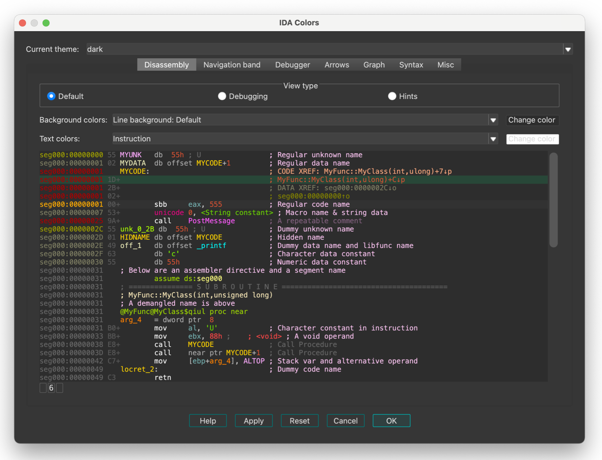
IDA keeps the color configuration in the registry. There are 3 predefined schemes. The user can modify the existing schemes or add his own schemes. New schemes should be added to the “themes” subdirectory in IDA.
Windows 11 style contrast
By default, IDA uses the “out-of-the-box” Qt style - named windows11.
That style mimics the core Microsoft Windows 11 theme, with which some users have reported some discomfort due to low-contrast hints.
This is observable especially in “tabular” widgets, where the selection painted using an somewhat discrete overlay:
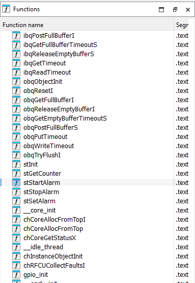
Addressing this naïvely (e.g., by overriding the selection entries through CSS) might do more harm than good though, so we have decided against that.
Instead, we recommend using the Qt “Fusion” style, which offers significantly better contrast:
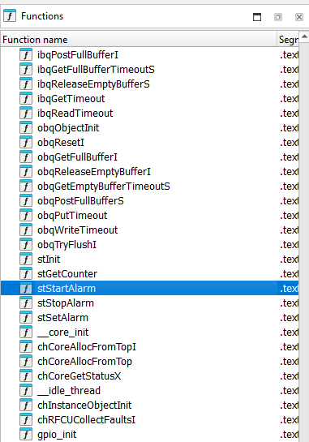
This is achievable by opening the “Environment variables” dialog, and adding an entry called QT_STYLE_OVERRIDE with the value fusion.
Font…
Setup font. This dialog allows you to customize the font used in listings.
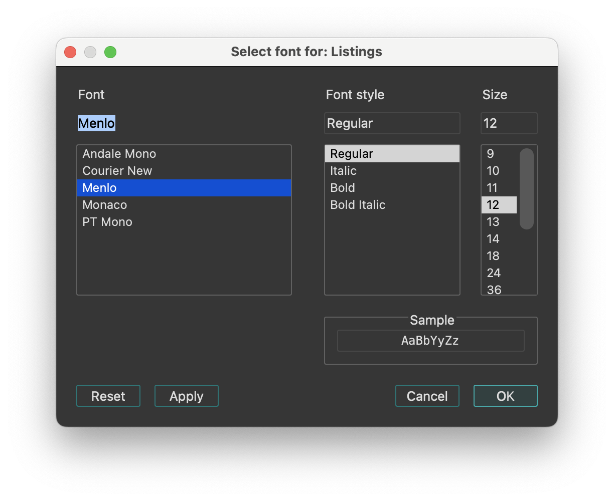
Feature Flags…
Configure feature flags.
This dialog lists optional features that can be enabled or disabled. By default, the two options below are enabled, supporting the new JumpAnywhere feature:
- Override G shortcut with new Jump Anywhere dialog.
- (If disabled, the G will continue to trigger “Jump to address…” dialog).
- Enable preview pane in Jump Anywhere dialog.
Shortcuts…
Edit shortcuts. This dialog allows you to view and customize all keyboard shortcuts used in IDA. You can use Ctrl + F to search by command name or keyboard shortcut.
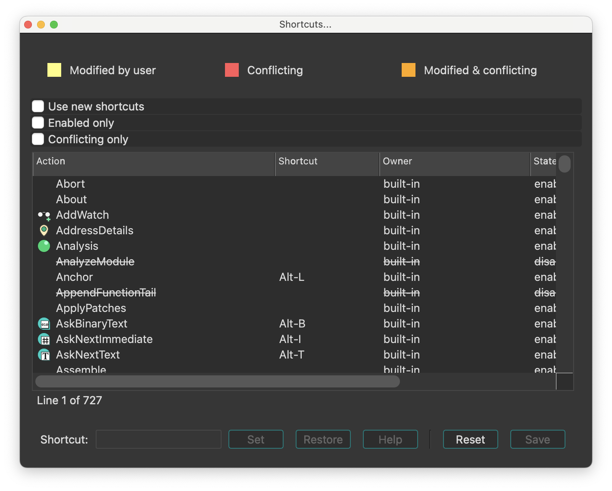
Show command palette…
Show command palette. This command opens a dialog, that provides quick access to all available IDA actions with shortcuts and descriptions.
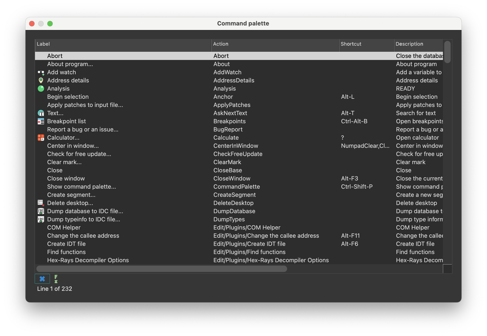
Reset undo history
Reset undo history. This command clears the undo history. After it the Undo and Redo commands become unavailable. However, once the user performs a new action, IDA will again start journaling all database modifications.
A side effect of this command is fast autoanalysis: since there is no user action to revert yet, IDA does not maintain undo buffers and this speeds up the analysis.
Assembler directives…
Setup assembler directive generation.
This command enables/disables the generation of some assembler directives, namely:
- assume directive
- origin directive Sometimes (when you do not intend to assemble the output file), you may want to disable their generation.
Name representation…
Setup name representation. Dummy names are automatically generated by IDA. They are used to denote subroutines, program locations and data. Dummy names have various prefixes depending on the item type and value:
| Prefix | Description |
|---|---|
sub_ | instruction, subroutine start |
locret_ | ‘return’ instruction |
loc_ | instruction |
off_ | data, contains offset value |
seg_ | data, contains segment address value |
asc_ | data, string literal |
byte_ | data, byte |
word_ | data, 16-bit |
dword_ | data, 32-bit |
qword_ | data, 64-bit |
byte3_ | data, 3 bytes |
xmmword_ | data, 128-bit |
ymmword_ | data, 256-bit |
packreal_ | data, packed real |
flt_ | floating point data, 32-bit |
dbl_ | floating point data, 64-bit |
tbyte_ | floating point data, 80-bit |
stru_ | structure |
custdata_ | custom data type |
algn_ | alignment directive |
unk_ | unexplored byte |
You can change representation of dummy names. IDA supports several types of dummy names:
| Format | Example | Description |
|---|---|---|
0 | loc_0_1234 | segment base address relative to program base address & offset from the segment base |
1 | loc_1000_1234 | segment base address & offset from the segment base |
2 | loc_dseg_1234 | segment name & offset from the segment base |
3 | loc_0_11234 | segment relative to base address & full address |
4 | loc_1000_11234 | segment base address & full address |
5 | loc_dseg_11234 | segment name & full address |
6 | loc_12 | full address |
7 | loc_0012 | full address (at least 4 digits) |
8 | loc_00000012 | full address (at least 8 digits) |
9 | dseg_1234 | the same as 2, but without data type specifier |
10 | loc_1 | enumerated names (loc_1,loc_2,loc_3…) |
If you have selected names type 10 (enumerated names), you may renumber them using a checkbox. The process is relatively fast, surprisingly.
The best representation for MS DOS programs is #0, for 16-bit processors - #7, and for 32-bit processors - #8. You can change dummy names type any time you want.
You can also set up types of names included in the name list (Jump by name… command, action JumpName). IDA knows about the following types of names:
- normal names
- public names
- weak public or extern names
- autogenerated (meaningful) names.
- dummy (meaningless) names.
Dummy names may be public or weak, but they never appear in the list of names. You can specify the type of a name when you create or rename it.
You can also set maximal length of new names. Old names will not be affected by this parameter.
See also: the Rename command.
Demangled names…
Setup C++ demangled name representation. IDA can demangle mangled C++ names of the most popular C++ compilers:
- Microsoft
- Borland
- Watcom
- Visual Age
- GNU
The demangled names are represented in two forms: short and long form. The short form is used when a name is used as a reference, the long form is used at the declaration.
You can set how demangled C++ names must be represented:
- as comments: this representation allows you to obtain recompilable source text
- instead of mangled names: this representation makes the output more readable (the disadvantage is that you cannot recompile the output)
- don’t display demangled names.
You can setup short and long forms of demangled names. Short form is used when a reference to the name is made; long form is used at the declaration.
To make demangled names more readable, we introduce the possibility to suppress pointer modifiers (near/far/huge).
To demangle GNU C v3.x names, the “Assume GCC v3.x names” checkbox should be set, otherwise such names might not be demangled. Furthermore, to make the demangled name more compact, unsigned types may be displayed as uchar, uint, ushort, ulong. The same with signed basic types.
If the “Override type info” checkbox is set, the demangled name overrides the type information if both are present.
See also How to customize demangled names
Compiler…
Setup target compiler and its parameters. This dialog allows the user to specify the compiler used to create the program along with the memory model, default calling convention, ABI and other parameters. Please note that while some combinations of the parameters are meaningless, IDA doesn’t check them for validity. It is up to the user to specify a correct combination.
IDA tries to determine the correct values automatically.
The include directories are a list of directories that look for the standard C headers. This parameter is used during parsing C header files (the Parse C header file… command; action LoadHeaderFile). The directories must be separated by ‘;’ in MS Windows and ‘:’ in Linux. The predefined macros field has the same format and is used similarly. Please note that IDA doesn’t define any compiler-specific macros by default.
Parser options
You can select between different parsers using the parser settings located at the bottom of the Compiler options dialog.
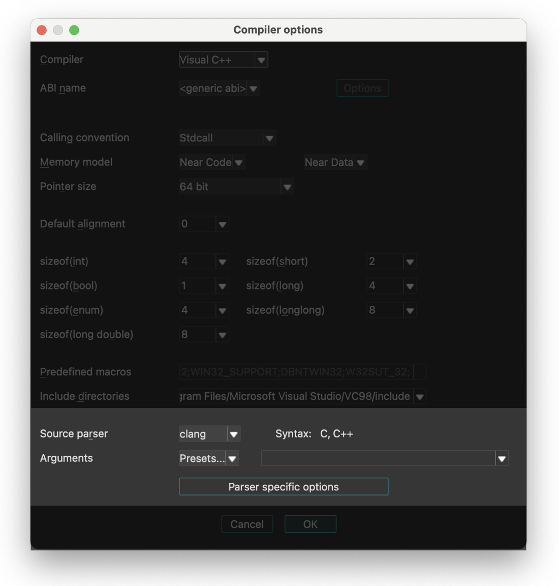
IDA provides three parser options:
- legacy - old internal IDA parser (will be removed in future versions)
- old_clang - previous parser based on clang
- clang - new parser introduced in IDA 9.2, (based on LLVM)
Parser Configuration
The old_clang and new clang parser can be fine-tuned using the Parser specific options dialog.
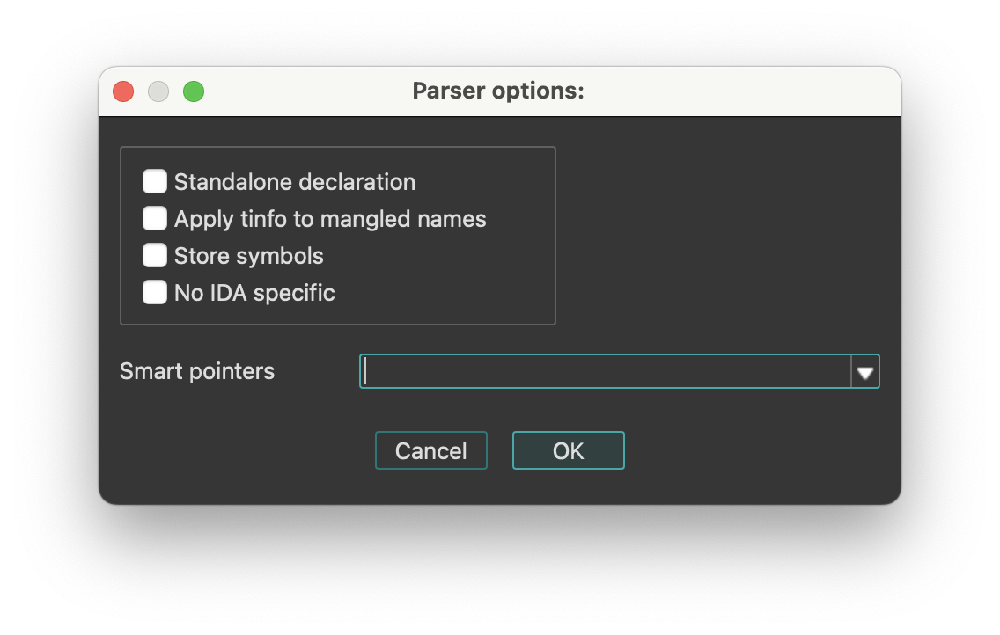
String literals…
Setup string literal style. With this dialog you can setup string styles and also create a new string immediately at the current location.
The following string styles are defined:
- C-style (zero-terminated)
- DOS style ($ terminated)
- Pascal style (one byte length prefix)
- Wide pascal (two-byte length prefix)
- Delphi (four-byte length prefix)
- Unicode (UTF-16)
- Unicode pascal style (two-byte length prefix)
- Unicode wide pascal style (four-byte length prefix)
- Character terminated
If you select “character terminated” string style then you may specify up to 2 termination characters. The string will be terminated by any of these characters. If the second character is equal to 0, then it is ignored. In IDA Qt you can also set a specific encoding to be used to display the string, or change the defaults for all strings.
String encodings
IDA Qt can display program strings using different encodings. You can specify default encodings for all strings or override the encoding of a specific string.
The following encodings can be used:
<default>- the default encoding for this string type (8-bit or 16-bit)<no conversion>- the string bytes are printed using the current system encoding (after translating with XlatAsciiOutput array in the configuration file).- Windows codepages (e.g., 866, CP932, windows-1251)
- Charset names (e.g., Shift-JIS, UTF-8, Big5)
You can add new encodings to the list using the context menu item Insert (Ins hotkey).
On Linux/OS X, you can run “iconv -l” to see the available encodings. Please note that some encodings are not supported on all systems.
Setup data types…
Setup data types.
This command allows you to select the data types used in the round-robin carousel in the Data (action MakeData) command.
Valid data types are:
| Data Type | Size |
|---|---|
| byte | |
| word | 2 bytes |
| double word | 4 bytes |
| float | 4 bytes |
| quadro word | 8 bytes |
| double | 8 bytes |
| long double | 10 or 12 bytes |
| packed real | 10 or 12 bytes |
| octa word | 16 bytes |
Naturally, not all data types are usable for all processors. For example, Intel 8051 processor doesn’t have the ‘double word’ type. Furthermore, this command allows you to select a data type for the current undefined item and convert it to data. Please note that if the current processor does not support a data type, you cannot assign it even if you have selected it. If you unselect all data types, IDA will use the ‘byte’ type.
Source paths…
Setup source paths. In this dialog you can configure path mappings to help IDA locate source files in different locations.